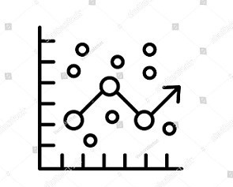
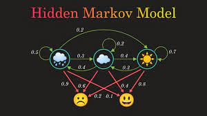

I have recently graduated from Bangladesh University of Engineering and Technology and am currently employed as a Lecturer in the department of CSE in United International University, Dhaka, Bangladesh. I am highly motivated in research related to Human Computer Interaction, Machine Learning, Data Visualization, Ubiquitous Computing, and Machine Learning. My long-term goal is to combine teaching with performing novel research on these topics. My undergraduate thesis, supervised by Dr Shamusozzoha Bayzid, was “Fast and Accurate Species Tree Estimation using Consensus Methods”. It mainly involves developing a novel consensus method to summarise a set of gene trees into a species tree, which will help to evaluate the evolution path. I won a machine learning competition for consecutive two years. From 2021, I shifted my research interest from bioinformatics to Human-Computer Interaction, Machine Learning and Ubiquitous Computing.I have been working on a voluntarily project on ubiquitous computing named “Group meetup prediction using spatiotemporal data” for two years. Recently, I have started working on “Detecting mental stress in menstrual cycle among women”. My interest lies in working with Human-Computer Interaction in the long run. Moreover, I was the president of the IEEE Computer Society BUET Student Branch Chapter. I tried to create more opportunities for my community through this organisation. I have successfully organised Bangladesh’s first inter-university security competition, “Capture The Flag”. I have excelled in leadership and communication skill. My extra-curricular activity records are pretty decent, and I have won many awards in math, biology, science, etc. Besides, my interests involve travelling, dancing, and painting.
This project aims to predict the energy level at different menstrual cycle stages. The correlation between stress and the menstrual cycle is one of the essential features in predicting energy levels. We are conducting a survey on female computer science students using a semi-constructed interview and a smartwatch. The data from the surveys will be used for empirical study and feature for the machine learning model.
This study attempts to address the problem of predicting the group meetup POI(point of interest) of a person at a given time where the group members are socially connected to each other. Though predicting a meetup event location is inherently complex, in this study, we show that users' check-in and friendship data can reveal future meetup event locations quite confidently. The work will help ad agencies to provide more personalized ads.Also,Crime investigation agencies will be able to predict criminal activities by utilizing the prediction.
A species tree is a branching diagram or a tree showing the evolutionary relationships among various biological species. In this study,we propose a 2/3 rd Majority Method, a highly accurate method for species tree estimation from gene trees, by extending upon the Majority method. 2/3 rd Majority Method was tried out on a collection of simulated datasets. We compared 2/3 rd Majority Method not only with Strict Consensus Method, which is the best alternate method for estimating species trees with zero False Positive rate (FP) but also with many other consensus methods.
This study attempts to segment accurate breast ultrasound image using MultiResUNet. An accurate segmented image can help to locate a tumor and predict if it's benign or malignant.
Language- Javacript, Library- NodeJS, Database- MongoDB, Frontend- HTML,CSS Bootstrap
A website with online diagnostic facilities and hassle-free online appointments with doctors from different hospitals. During COVID-19, the infection risk was increasing, so people were afraid to go to the hospital and diagnostic centre. In this system, we tried to provide a door-to-door step diagnostic centre facility to lower the risk of sick people from Corona. There were 4 kinds of users in our system. Smooth user interface and exhchanging the data between database and software were the main challenges. This website was developed mainly for the senior citizens of our country. A detailed use case study was conducted for the ux design of this project which had a significant impact in the front-end design.
Library- NodeJS, Database - MongoDB
Corona in Bangladesh is a web platform created to serve as an information hub about the Covid-19 epidemic in Bangladesh that Bangladesh Government recognized as a reliable Covid-19-related news outlet. I collected all the authentic news from different sources every day. Later, I pushed the data into the database.
Language- Javacript, Library- NodeJS, Database- MongoDB, Frontend- HTML,CSS Bootstrap
I developed this website because of the emergence and growth of food blogs. Any authorized user of this website can post, upload photos of food and share their experiences. Other authorized users can interact with each other through the comment section. My passion for food motivated me to build this project to keep the memories of different food and cooking experience. I also want to keep all my food-enthusiastic friends in one place to strengthen the community.
Python, Scapy, SSH, VirtualBox VM, WireShark
I used python to launch a DHCP starvation attack on my Wifi to exhaust the address space available to the DHCP servers for some time. After the attack, no more devices could connect to that Wifi.
Python, Numpy, Pandas, Scikit Learn
I created a logistic regression classifier in this project and improved its performance using the adaboost algorithm. Using three datasets, I validated the performance of the classifier, which was fairly satisfactory.
Python, Numpy, Pandas, Scikit Learn
I built a Hidden Markov Model that learns its parameters from a real-life scenario in an Expectation-Maximization approach to understand the fundamental aspects of Markov Chains involving Baum-Welch Learning.
Language- Java, Framework- JavaFX
I developed a database system for easy accessibility of the users who will avail online ride sharing service.
This datathon was held among students from 21 districts and 27 Technical Universities in Bangladesh. I, along with my team, developed a machine learning model to find the impact of Covid-19 in depression. The dataset was provided on Kaggle. Our AUC score was good enough to predict the impact of Covid-19 on depression.
The datathon was organized internationally. Teams from different country competed with my team. I, along with my team, developed a machine learning model to predict taxi count in a given day to help analyzing traffic data.
Library- NodeJS, Database - MongoDB
This is a web platform created to serve as a information hub about the Covid-19 epidemic in Bangladesh It was recognized by Bangladesh Government as a reliable Covid-19 related news outlet. I worked in the backend section to collect reliable data and pushing them into the database on regular basis.
Language- Javacript, Library- NodeJS, Database- MongoDB, Frontend- HTML,CSS Bootstrap
A website with online diagnostic facilities and hassle-free online appointments with doctors from different hospitals. During Corona, the infection risk was increasing, so people were afraid to go to the hospital and diagnostic centre. In this system, we tried to provide a door-to-door step diagnostic centre facility to lower the risk of sick people from Corona. There were 4 kinds of users in our system. Smooth user interface and exhchanging the data between database and software were the main challenges.
Language- Javacript, Library- NodeJS, Database- MongoDB, Frontend- HTML,CSS Bootstrap
A website where anyone can post recipes,experiences about food and others can comment, like etc.The passion of food motivates me to build this project to keep the memories of different food and cooking experience.
Python, Scapy, SSH, VirtualBox VM, WireShark
I used python to launch a DHCP starvation attack on my Wifi to exhaust the address space available to the DHCP servers for a period of time. After the attack, no more device was able to connect to that Wifi
Python, Numpy, Pandas, Scikit Learn
In this project, I implemented a logistic regression classifier and used it in the AdaBoost algorithm for classification. Three open datasets were used in this project.
Python, Numpy, Pandas, Scikit Learn
Hidden Markov Model (HMM) was implemented with the Viterbi and the Baum-Welch algorithm in this project.
Language- Java, Framework- JavaFX
I developed a database system for easy accessibility of the users who will avail online ride sharing service.
Thank you for visiting my profile. If you would like to get into contact with me, please view the information below.